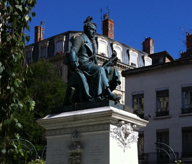
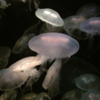
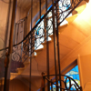
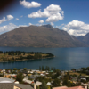

ABBREVIATED CV

-
•Member of Council of the Australasian Fluid Mechanics Society, 2008 - present
-
•Past Member of Academic Senates of Macquarie University, University of Auckland and the University of Adelaide
-
•Past Member of the Board of the Australian Mathematical Sciences Institute, 2008 - 2009, 2016 - 2018
-
•Voting member of the General Assembly of the International Union of Theoretical and Applied Mechanics (IUTAM), 2006 - 2012, 2014 - 2016
-
•Vice President of the Australasian Fluid Mechanics Society, 2013 - 2014
-
•Past Deputy Chair, Australian Council of Heads of Mathematical Sciences (ACHMS)
-
•Past Member of the Reference Committee for the Go8 Review of Mathematics
-
•Past Chair of the Australian Academy of Sciences National Committee for the Mechanical Sciences
-
•Past Member, Australian Mathematical Sciences Institute, Education Advisory Committee
-
•Past Member of the Australian Partnership for Advanced Computing National Facility, Merit Allocation Committee
-
•Past Member of the Management Committee of the Australian Research Council Complex Open Systems Network (COSNet)
-
•Past Member of the Australian Mathematical Society Executive Committee
-
•Past Member of the ANZIAM Executive Committee
-
•Secretary-General, ICTAM2008
-
•Past Conventions Adelaide Ambassador

NAME
professor Jim Denier
Current POSITION
Professor of Applied Mathematics, Department of Mathematics and Statistics, Macquarie University
Qualifications
1989 PhD in Mathematics, UNSW
1984 B.Sc (Hons I) University of Melbourne
Major awards
1985–1988 Commonwealth Government Postgraduate Research Award
1983 E. R. Love Prize in Mathematics, Melbourne University
1983 Dixson Scholarship in Applied Mathematics, Melbourne University
Previous Appointments
8/2018 - 9/2019 Head, Department of Mathematics and Statistics, Macquarie University
2015 - 2018 Head, Department of Mathematics, Macquarie University
2012 - 2015 Chair of Continuum Mechanics, The University of Auckland
2006 - 2012 Head, School of Mathematical Sciences, The University of Adelaide
1995 - 2012 Lecturer/Senior Lecturer/Reader, University of Adelaide
1991 - 1995 Lecturer, University of New South Wales
1991 Research Fellow, University of Manchester
1989 - 1991 Research Fellow, University of Exeter
Travel SNAPSHOTS



NATIONAL And international roles
Copyright 1995-2019 Jim Denier